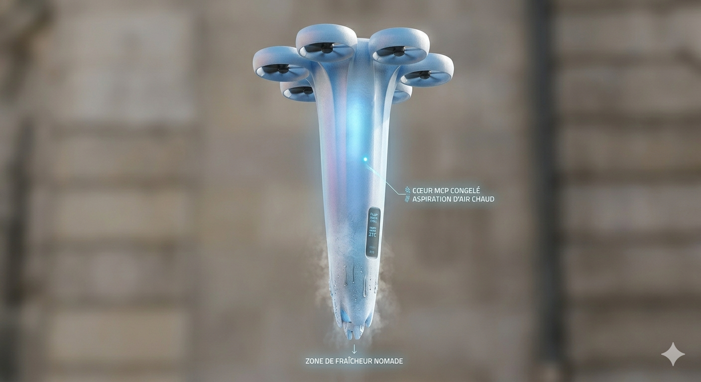

Les villes sont de plus en plus chaudes en été à cause des îlots de chaleur urbains. Le bitume stocke la chaleur et les climatiseurs aggravent le problème en rejetant encore plus de chaleur dans la rue.
FrostDrone a une forme de stalactite avec des rotors silencieux en haut. Son corps contient un matériau à changement de phase (MCP) qui emmagasine le froid pendant la nuit et le libère pendant la journée.
Il se place en vol stationnaire au-dessus des arrêts de bus, des parcs ou des terrasses d'école pour créer une bulle d'air frais entre 18°C et 22°C sous lui.
Le drone monte sur son toit de recharge. Des stations alimentées par panneaux solaires font recongeler le matériau MCP à l'intérieur du drone pour le soir.
Grâce à ses capteurs thermiques, le drone détecte automatiquement les zones les plus chaudes de la ville ou les groupes de personnes en danger de chaleur.
Il aspire l'air chaud par le haut, le fait passer à travers son corps glacé, puis rejette un flux d'air frais vers le bas. Aucun produit chimique, juste de la physique.
Quand tout le froid du MCP est utilisé, le drone retourne automatiquement à sa station sur les toits pour se recharger pendant la nuit suivante.
Pas de brumisation, donc aucune goutte d'eau gaspillée. Le refroidissement est uniquement physique.
Contrairement aux clims, FrostDrone n'utilise pas de fluides chimiques et ne rejette aucune chaleur dans la rue.
Ses capteurs thermiques repèrent les personnes vulnérables (personnes âgées, enfants) et priorisent les zones les plus dangereuses.
Les stations de recharge sur les toits fonctionnent uniquement avec des panneaux solaires. Aucune énergie fossile utilisée.
Il peut intervenir partout : parcs, chantiers, marchés en plein air, arrêts de bus, là où les gens en ont vraiment besoin.
Ses rotors sont conçus pour être discrets. FrostDrone peut voler en ville sans déranger les habitants.
Oui. FrostDrone ne fait pas que rafraîchir les gens : il absorbe la chaleur urbaine dans son corps et ne la relâche que sur les toits, loin des passants. C'est exactement l'inverse d'un climatiseur classique.
Il fonctionne à l'énergie solaire, ne consomme pas d'eau, et n'utilise aucun produit chimique. Le matériau MCP est réutilisable indéfiniment.
Comparé à un brumisateur (qui gaspille l'eau) ou un simple ventilateur (qui brasse de l'air déjà chaud), FrostDrone est la seule solution qui retire vraiment de la chaleur de l'air extérieur de manière mobile.
✅ FrostDrone : une climatisation urbaine propre, mobile et intelligente.